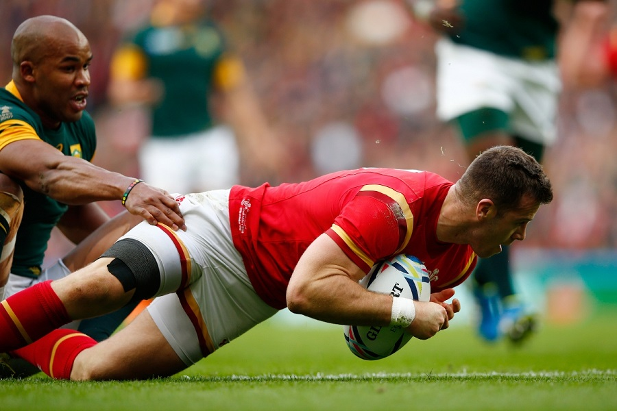
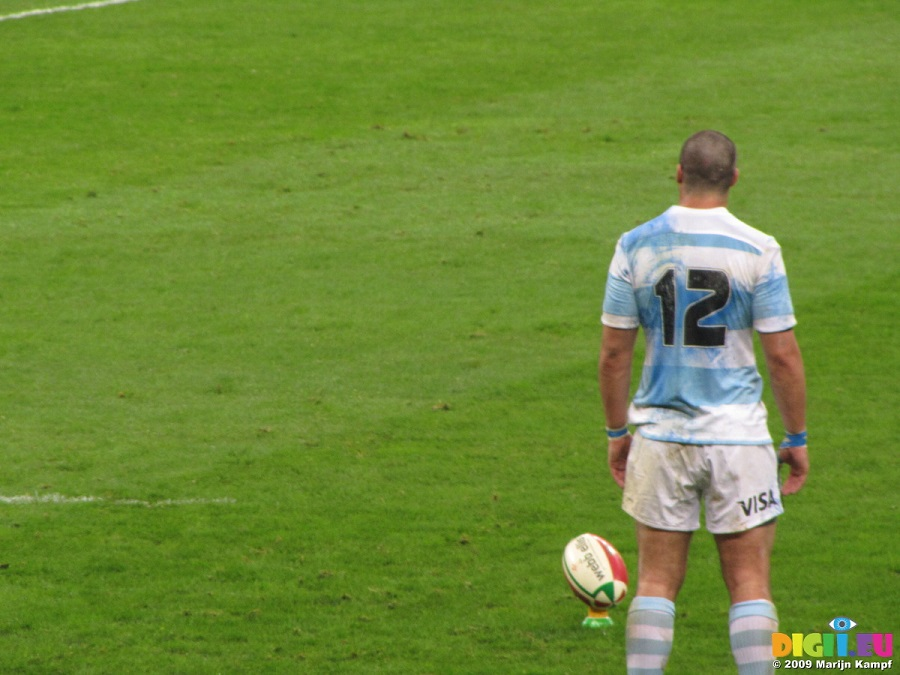
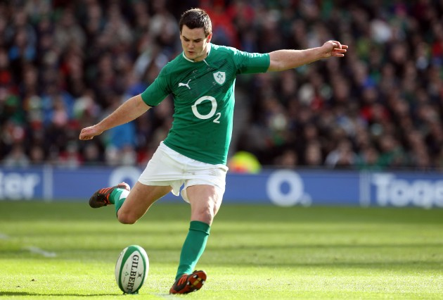

A team scores a try when they reach their in-goal area and touch the ball against the ground.
Unlike in American football, the ball must be touched against the ground for a try to be scored.
A try is worth five points and after a try a team may attempt a conversion kick.

{kind=link}
A team attempts a conversion kick after scoring a try. The team must kick the conversion parallel to the spot where they scored the try.
This makes attempting to score the try in the center of the field very important in order to get the best possible position for the conversion kick.
A successful conversion kick is worth two points.

A penalty kick may be offered for a serious infraction. If the penalty kick is kicked through the goalposts, the team scores three points.

{kind=link}
A team can score a drop goal by drop kicking the ball through the goal posts during play. The kick must be a drop kick and not a punt, meaning
the ball must be dropped, hit the ground and then be kicked. A drop goal is worth 3 points.

{kind=link}